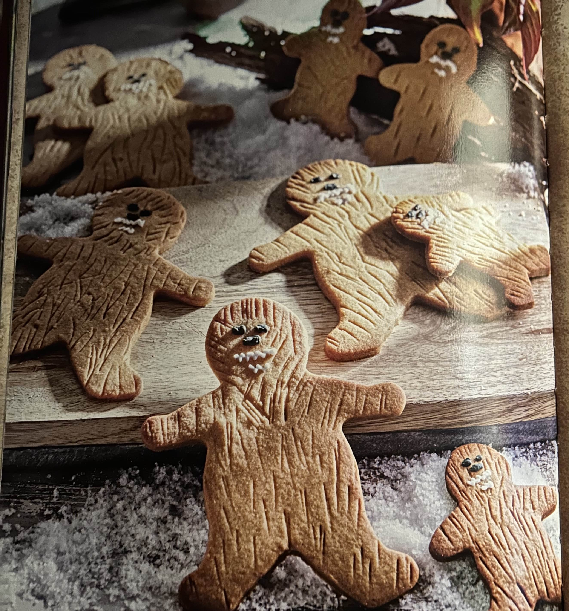

Wookiee-Ookies
Gingerbread man style cookies. Made to look like the wookies from Star wars, these small snacks are greats for the holiday season.
Ingredients
- 3 cups all-purpose flour
- 1 teaspoon baking powder
- 1 teaspoon ground cinnamon
- 1/4 teaspoon ground nutmeg
- 1/4 teaspoon salt
- 1 cup(2stick) unsalted butter, softened
- 1/2 cup packed light brown sugar
- 1/2 cup granulated sugar
- 1 large egg
- 2 tablespoons molasses
- 1 teaspoon vanilla extract
- (optional) black and white icing for decoration
Instructions
- In a medium bowl, whisk together the flour, baking powder, cinnamon, nutmeg, and salt. Set aside.
- In the bowl of an electric mixer, cream the butter, brown sugar, and granulated sugar for abut 5 to 6 minutes, until fluffy. Mix in the egg, molasses, and vanilla.
- Add the flour mixture, mixing until the dough just comes together. Halve the dough and wrap each half in plastic wrap. Refridgerate for 1 hour.
- Preheat the oven to 350 degrees F. Prep two baking sheets with silicon baking mats or parchemtn paper.
- Roll out the dough to a 1/4p-inch thickness. Use a gingerbread person-shape cutter to cut out the shapes and transfer them to the prepped baking sheets. Use the back of a knife to create fur marks.
- bake for 10 minutes then, transfer the cookies to a wire rack to cool. Use the black and white icing to create face details. Let dry completely.
Buy ingredients here
| Prep-Time. |
Cooking Time. |
Servings. |
| 1o minutes, plus 1 hour to chill. |
1o minutes. |
12 Servings. |
